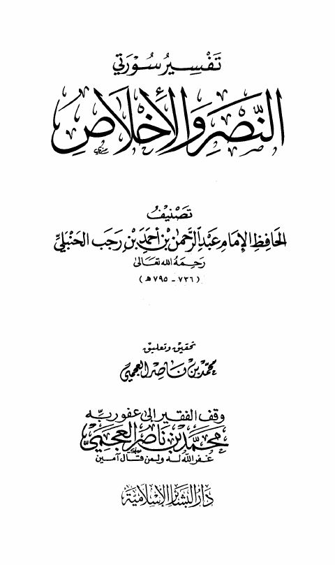

تفسير سورتي النصر والإخلاص
Authors: ابن رجب الحنبلي
Editors: محمد بن ناصر العجمي
Publishers: دار البشائر الإسلامية
Download Downloads need an internet connection.
- Published
- 2006م 1427هـ
- Country
- بيروت، لبنان
- Edition
- 1
- Volumes
- 1
- Pages
- 128
- Type
- كتاب
- Category
- التفسير وعلوم القرآن
- Subcategory
- التفاسير القديمة
Description
**▫️ العنوان: تفسير سورتي النصر والإخلاص** ▪️ المؤلف: #عبد_الرحمن_بن_أحمد_بن_رجب_الحنبلي ▫️ المحقق: #محمد_بن_ناصر_العجمي ▪️ الناشر: #دار_البشائر_الإسلامية ▫️ تاريخ النشر: 2006م 1427هـ ▪️ بلد النشر: بيروت، #لبنان ▫️ الطبعة: 1 ▪️ عدد الأجزاء: 1 ▫️ الصفحات: 128 ▪️ نوع الوعاء: #كتاب ▫️ التصنيف الرئيسي: #التفسير_وعلوم_القرآن ▪️ التصنيف الفرعي: #التفاسير_القديمة ۪